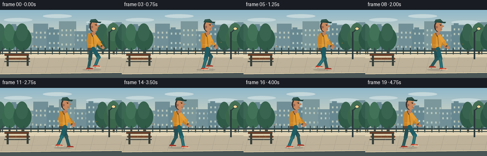
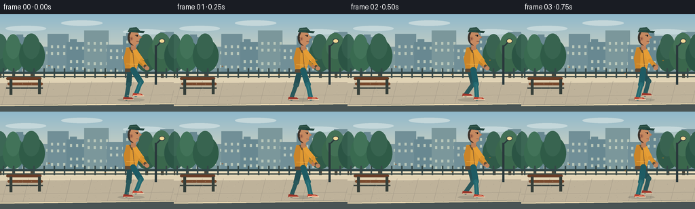

CODING AGENTS AS PIXEL WORLD MODELS
traex/GPT-5.6-Sol · motion_rationality_0033
点击播放 · 原生 RGB 像素
逐轮保存的候选
回放视频、检查图与代码变化。
每份候选均可单独播放。实际图片检查记录在下方工具轨迹中。
候选 01播放与检查图
点击播放 · 原生 RGB 像素

展开代码变化
--- 上一保存版本
+++ 本次保存版本
@@ -0,0 +1,213 @@
+from pathlib import Path
+import json, math, random
+import numpy as np
+from PIL import Image, ImageDraw, ImageFilter
+import artifact_io
+
+CASE_DIR = Path(__file__).resolve().parent
+SPEC = json.loads((CASE_DIR / 'task_spec.json').read_text())
+W,H,N,FPS = SPEC['width'],SPEC['height'],SPEC['frames'],SPEC['fps']
+S=4
+
+def scp(p): return tuple(int(round(v*S)) for v in p)
+def poly(d, pts, fill): d.polygon([scp(p) for p in pts], fill=fill)
+def ell(d, box, fill, outline=None, width=1): d.ellipse(scp(box), fill=fill, outline=outline, width=width*S)
+def rect(d, box, fill, outline=None, width=1, radius=0):
+ b=scp(box)
+ if radius: d.rounded_rectangle(b, radius=radius*S, fill=fill, outline=outline, width=width*S)
+ else: d.rectangle(b, fill=fill, outline=outline, width=width*S)
+def line(d, pts, fill, width): d.line([scp(p) for p in pts], fill=fill, width=max(1,int(width*S)), joint='curve')
+def limb(d,a,b,color,width):
+ line(d,[a,b],color,width)
+ r=width/2
+ ell(d,(a[0]-r,a[1]-r,a[0]+r,a[1]+r),color)
+ ell(d,(b[0]-r,b[1]-r,b[0]+r,b[1]+r),color)
+
+def make_background():
+ im=Image.new('RGB',(W*S,H*S),(201,222,225)); d=ImageDraw.Draw(im)
+ # soft dawn sky gradient
+ arr=np.zeros((H*S,W*S,3),dtype=np.uint8)
+ top=np.array([143,184,203]); bot=np.array([242,225,189])
+ for y in range(H*S):
+ q=min(1,y/(96*S)); arr[y,:,:]=(top*(1-q)+bot*q).astype(np.uint8)
+ im=Image.fromarray(arr); d=ImageDraw.Draw(im)
+ # subtle clouds
+ for box in [(8,17,68,25),(90,9,151,17),(181,22,244,30)]:
+ ell(d,box,(196,215,218))
+ # distant city silhouette
+ buildings=[(-5,43,25,88),(19,34,47,88),(45,48,73,88),(70,29,101,88),(98,41,127,88),(124,24,160,88),(157,45,185,88),(181,32,212,88),(208,41,239,88),(236,26,263,88)]
+ cols=[(113,143,151),(104,136,145),(123,151,155)]
+ for k,b in enumerate(buildings):
+ rect(d,b,cols[k%3])
+ x0,y0,x1,y1=b
+ # rooftop detail
+ if k%3==1: rect(d,(x0+5,y0-4,x0+15,y0),cols[k%3])
+ # windows
+ for yy in range(int(y0+7),int(y1-4),10):
+ for xx in range(int(x0+5),int(x1-3),9):
+ if (xx+yy+k)%3: rect(d,(xx,yy,xx+3,yy+4),(183,198,185))
+ # tree line
+ for x,r,c in [(0,18,(51,94,76)),(20,16,(57,106,80)),(47,19,(47,91,71)),(216,17,(48,90,72)),(239,21,(58,103,76)),(260,18,(43,84,68))]:
+ rect(d,(x-2,56,x+2,98),(74,70,56))
+ ell(d,(x-r,45-r*.45,x+r,79+r*.35),c)
+ ell(d,(x-r*.7,36-r*.4,x+r*.6,66),tuple(min(255,z+9) for z in c))
+ # railing behind pavement
+ rect(d,(0,85,256,88),(49,70,72))
+ for x in range(4,257,15): rect(d,(x,80,x+2,96),(54,72,72))
+ line(d,[(0,92),(256,92)],(66,78,73),2)
+ # sidewalk
+ poly(d,[(0,94),(256,94),(256,144),(0,144)],(190,178,154))
+ poly(d,[(0,94),(256,94),(256,100),(0,102)],(224,211,181))
+ # perspective slabs
+ for x in range(-20,290,31): line(d,[(x,99),(x-11,144)],(163,153,136),0.7)
+ line(d,[(0,122),(256,119)],(167,157,138),0.8)
+ # curb and foreground street
+ poly(d,[(0,134),(256,131),(256,144),(0,144)],(73,84,84))
+ line(d,[(0,135),(256,132)],(230,213,175),2)
+ # left bench, with person path in front
+ rect(d,(9,93,61,97),(104,62,40),radius=2)
+ rect(d,(11,101,63,105),(119,72,44),radius=2)
+ rect(d,(14,96,18,119),(53,62,57)); rect(d,(56,96,60,118),(53,62,57))
+ line(d,[(9,109),(63,109)],(57,65,60),2)
+ # lamppost at right
+ rect(d,(228,46,231,104),(41,56,59))
+ line(d,[(229.5,48),(238,40)],(41,56,59),2)
+ ell(d,(234,36,243,43),(244,216,151),(48,61,61),1)
+ # scattered tiny pavement texture deterministic
+ rng=random.Random(41)
+ for _ in range(110):
+ x=rng.randrange(0,256); y=rng.randrange(102,134)
+ c=rng.choice([(177,165,145),(203,190,164),(158,151,137)])
+ ell(d,(x,y,x+rng.choice([.3,.5,.8]),y+.35),c)
+ return im
+
+BG=make_background()
+
+def ik_knee(hip, ankle, L1=21, L2=20, bend=-1):
+ # Side-view two-link inverse kinematics; bend=-1 puts knee toward screen right.
+ dx=ankle[0]-hip[0]; dy=ankle[1]-hip[1]
+ dist=max(1,min(math.hypot(dx,dy),L1+L2-0.05))
+ a=(L1*L1-L2*L2+dist*dist)/(2*dist)
+ h=math.sqrt(max(0,L1*L1-a*a))
+ ux,uy=dx/dist,dy/dist
+ px,py=hip[0]+a*ux,hip[1]+a*uy
+ return (px + bend*(-uy)*h, py + bend*ux*h)
+
+def draw_person(im, idx):
+ d=ImageDraw.Draw(im,'RGBA')
+ t=idx/(N-1)
+ # unmistakable leftward screen travel while body/head stay oriented right
+ x=193 - 103*t
+ phase=2*math.pi*(t*3.05 + .08)
+ bob=1.15*(1-math.cos(phase*2))/2
+ ground=126.0
+ hip=(x,82+bob)
+ # soft contact shadow
+ ell(d,(x-20,ground-2,x+20,ground+3),(42,51,49,42))
+
+ # Foot trajectories: stride axis points right while body progresses left.
+ # Lift is staggered by half a gait cycle.
+ feet=[]
+ for p in (phase,phase+math.pi):
+ rel=14.3*math.sin(p)
+ lift=6.4*max(0,math.cos(p))**1.3
+ feet.append((x+rel,ground-2-lift))
+
+ # far leg (desaturated teal)
+ far=feet[1]; hk=(hip[0]-2,hip[1])
+ knee=ik_knee(hk,far,bend=-1)
+ limb(d,hk,knee,(35,78,83,255),8.0)
+ limb(d,knee,far,(42,88,91,255),6.4)
+ # far shoe points RIGHT, another strong facing cue
+ fy=far[1]
+ poly(d,[(far[0]-4,fy-2),(far[0]+8,fy-1),(far[0]+11,fy+2),(far[0]-5,fy+2)],(157,55,43,255))
+ line(d,[(far[0]-4,fy+2),(far[0]+11,fy+2)],(238,210,175,255),1.2)
+
+ # far arm, reaching slightly out for backward-walking balance
+ shoulder_far=(x+1,54+bob*.5)
+ ap=-math.sin(phase)*.55
+ elbow=(shoulder_far[0]+10+8*ap,shoulder_far[1]+13)
+ hand=(elbow[0]+10-3*ap,elbow[1]+10)
+ limb(d,shoulder_far,elbow,(174,116,39,255),6.3)
+ limb(d,elbow,hand,(192,130,45,255),5.1)
+ ell(d,(hand[0]-3,hand[1]-3,hand[0]+3,hand[1]+3),(181,121,87,255))
+
+ # torso leans subtly right (opposite travel), cautious backward step
+ # back edge at left, chest at right
+ poly(d,[(x-7,49+bob*.5),(x+7,48+bob*.5),(x+12,67+bob*.7),(x+7,84+bob),(x-8,83+bob),(x-11,65+bob*.7)],(221,151,49,255))
+ # jacket side shading and hem
+ poly(d,[(x-7,50),(x-1,49),(x-2,82),(x-8,82),(x-11,65)],(188,119,35,150))
+ line(d,[(x+2,51+bob*.5),(x+5,81+bob)],(112,78,48,210),1)
+ line(d,[(x-7,73+bob),(x+10,74+bob)],(240,180,76,180),1)
+ rect(d,(x-9,80+bob,x+8,85+bob),(92,73,54,255),radius=1.5)
+ # collar
+ poly(d,[(x-3,49),(x+7,48),(x+9,55),(x+1,57)],(104,79,49,255))
+
+ # near leg
+ near=feet[0]; hk2=(hip[0]+3,hip[1])
+ knee2=ik_knee(hk2,near,bend=-1)
+ limb(d,hk2,knee2,(30,91,99,255),8.7)
+ # denim highlight
+ limb(d,knee2,near,(36,105,112,255),6.7)
+ line(d,[knee2,near],(67,132,134,190),1.0)
+ ny=near[1]
+ poly(d,[(near[0]-4,ny-2),(near[0]+8,ny-1),(near[0]+12,ny+2),(near[0]-5,ny+2)],(189,66,48,255))
+ line(d,[(near[0]-4,ny+2),(near[0]+12,ny+2)],(250,220,184,255),1.4)
+ line(d,[(near[0]+2,ny),(near[0]+7,ny)],(248,190,149,255),.8)
+
+ # near arm in counter-swing
+ shoulder=(x+6,54+bob*.5)
+ ap2=math.sin(phase)*.5
+ elbow2=(shoulder[0]+8+7*ap2,shoulder[1]+14)
+ hand2=(elbow2[0]+8-2*ap2,elbow2[1]+11)
+ limb(d,shoulder,elbow2,(229,157,53,255),7.0)
+ limb(d,elbow2,hand2,(218,145,46,255),5.3)
+ # cuff and hand
+ limb(d,(hand2[0]-2.5,hand2[1]-2.5),hand2,(91,74,56,255),4.3)
+ ell(d,(hand2[0]-3,hand2[1]-2.5,hand2[0]+3.5,hand2[1]+3.5),(191,132,95,255))
+
+ # neck and head, clear right-facing profile
+ rect(d,(x+0,42+bob*.3,x+7,53+bob*.3),(188,127,91,255),radius=2)
+ # hair/back of head
+ ell(d,(x-5,23+bob*.25,x+12,46+bob*.25),(58,49,43,255))
+ # face with forehead and distinctly projecting nose to RIGHT
+ face=[(x+1,25+bob*.25),(x+9,26+bob*.25),(x+12,31+bob*.25),
+ (x+16,34+bob*.25),(x+12,37+bob*.25),(x+11,43+bob*.25),
+ (x+5,47+bob*.25),(x-1,42+bob*.25),(x-2,32+bob*.25)]
+ poly(d,face,(198,137,96,255))
+ # ear
+ ell(d,(x-2,33+bob*.25,x+3,39+bob*.25),(179,116,84,255))
+ ell(d,(x-.5,34.5+bob*.25,x+1.5,37.5+bob*.25),(113,75,65,180))
+ # eye looking right, eyebrow
+ line(d,[(x+6,31+bob*.25),(x+10,30.5+bob*.25)],(63,48,42,255),1)
+ ell(d,(x+8,31+bob*.25,x+10,33+bob*.25),(30,31,29,255))
+ # nose edge and small mouth
+ line(d,[(x+12,33+bob*.25),(x+16,34+bob*.25),(x+12,36+bob*.25)],(134,79,65,220),.7)
+ line(d,[(x+8,40+bob*.25),(x+12,40.5+bob*.25)],(91,51,48,255),.8)
+ # baseball cap with bill pointing right
+ poly(d,[(x-5,26+bob*.25),(x-2,20+bob*.25),(x+8,19+bob*.25),(x+13,24+bob*.25),(x+9,27+bob*.25)],(41,77,68,255))
+ poly(d,[(x+7,24+bob*.25),(x+20,25+bob*.25),(x+18,28+bob*.25),(x+8,27+bob*.25)],(34,66,59,255))
+ line(d,[(x-2,22+bob*.25),(x+9,22+bob*.25)],(81,115,94,180),.8)
+
+ # tiny white motion accents near trailing LEFT heel only when raised
+ if max(0,math.cos(phase))>.55:
+ a=max(0,math.cos(phase))
+ line(d,[(near[0]-8,near[1]+1),(near[0]-13,near[1]+1+a)],(240,231,208,120),1)
+
+def generate():
+ frames=[]
+ for i in range(N):
+ im=BG.copy()
+ draw_person(im,i)
+ # a few drifting leaves supply subtle secondary temporal detail
+ d=ImageDraw.Draw(im,'RGBA')
+ for j,(bx,by) in enumerate([(72,76),(155,88),(211,70)]):
+ xx=bx-((i*(.5+.12*j))%18)
+ yy=by+2.2*math.sin(i*.45+j*2)
+ ell(d,(xx-1,yy-0.6,xx+1.2,yy+0.7),(160,92+12*j,39,190))
+ im=im.resize((W,H),Image.Resampling.LANCZOS)
+ frames.append(np.asarray(im,dtype=np.uint8))
+ return np.stack(frames)
+
+if __name__=='__main__':
+ artifact_io.save(generate(), CASE_DIR)
可观测工具轨迹
实际执行的命令与返回图片。
命令 1exit 0
/bin/bash -lc "cat prompt.txt && printf '\\n---RULES---\\n' && cat GENERATION_RULES.md && printf '\\n---SPEC---\\n' && cat task_spec.json"
命令 2exit 0
/bin/bash -lc "find . -maxdepth 2 -type f -printf '%p %s bytes\\n' | sort"
命令 3exit 0
/bin/bash -lc "sed -n '1,240p' artifact_io.py"
命令 4exit 0
/bin/bash -lc "python - <<'PY'
import PIL, numpy
print('PIL',PIL.__version__,'numpy',numpy.__version__)
PY
which ffmpeg || true"命令 5exit 0
/bin/bash -lc "cat > generate.py <<'PY'
from pathlib import Path
import json, math, random
import numpy as np
from PIL import Image, ImageDraw, ImageFilter
import artifact_io
CASE_DIR = Path(__file__).resolve().parent
SPEC = json.loads((CASE_DIR / 'task_spec.json').read_text())
W,H,N,FPS = SPEC['width'],SPEC['height'],SPEC['frames'],SPEC['fps']
S=4
def scp(p): return tuple(int(round(v*S)) for v in p)
def poly(d, pts, fill): d.polygon([scp(p) for p in pts], fill=fill)
def ell(d, box, fill, outline=None, width=1): d.ellipse(scp(box), fill=fill, outline=outline, width=width*S)
def rect(d, box, fill, outline=None, width=1, radius=0):
b=scp(box)
if radius: d.rounded_rectangle(b, radius=radius*S, fill=fill, outline=outline, width=width*S)
else: d.rectangle(b, fill=fill, outline=outline, width=width*S)
def line(d, pts, fill, width): d.line([scp(p) for p in pts], fill=fill, width=max(1,int(width*S)), joint='curve')
def limb(d,a,b,color,width):
line(d,[a,b],color,width)
r=width/2
ell(d,(a[0]-r,a[1]-r,a[0]+r,a[1]+r),color)
ell(d,(b[0]-r,b[1]-r,b[0]+r,b[1]+r),color)
def make_background():
im=Image.new('RGB',(W*S,H*S),(201,222,225)); d=ImageDraw.Draw(im)
# soft dawn sky gradient
arr=np.zeros((H*S,W*S,3),dtype=np.uint8)
top=np.array([143,184,203]); bot=np.array([242,225,189])
for y in range(H*S):
q=min(1,y/(96*S)); arr[y,:,:]=(top*(1-q)+bot*q).astype(np.uint8)
im=Image.fromarray(arr); d=ImageDraw.Draw(im)
# subtle clouds
for box in [(8,17,68,25),(90,9,151,17),(181,22,244,30)]:
ell(d,box,(196,215,218))
# distant city silhouette
buildings=[(-5,43,25,88),(19,34,47,88),(45,48,73,88),(70,29,101,88),(98,41,127,88),(124,24,160,88),(157,45,185,88),(181,32,212,88),(208,41,239,88),(236,26,263,88)]
cols=[(113,143,151),(104,136,145),(123,151,155)]
for k,b in enumerate(buildings):
rect(d,b,cols[k%3])
x0,y0,x1,y1=b
# rooftop detail
if k%3==1: rect(d,(x0+5,y0-4,x0+15,y0),cols[k%3])
# windows
for yy in range(int(y0+7),int(y1-4),10):
for xx in range(int(x0+5),int(x1-3),9):
if (xx+yy+k)%3: rect(d,(xx,yy,xx+3,yy+4),(183,198,185))
# tree line
for x,r,c in [(0,18,(51,94,76)),(20,16,(57,106,80)),(47,19,(47,91,71)),(216,17,(48,90,72)),(239,21,(58,103,76)),(260,18,(43,84,68))]:
rect(d,(x-2,56,x+2,98),(74,70,56))
ell(d,(x-r,45-r*.45,x+r,79+r*.35),c)
ell(d,(x-r*.7,36-r*.4,x+r*.6,66),tuple(min(255,z+9) for z in c))
# railing behind pavement
rect(d,(0,85,256,88),(49,70,72))
for x in range(4,257,15): rect(d,(x,80,x+2,96),(54,72,72))
line(d,[(0,92),(256,92)],(66,78,73),2)
# sidewalk
poly(d,[(0,94),(256,94),(256,144),(0,144)],(190,178,154))
poly(d,[(0,94),(256,94),(256,100),(0,102)],(224,211,181))
# perspective slabs
for x in range(-20,290,31): line(d,[(x,99),(x-11,144)],(163,153,136),0.7)
line(d,[(0,122),(256,119)],(167,157,138),0.8)
# curb and foreground street
poly(d,[(0,134),(256,131),(256,144),(0,144)],(73,84,84))
line(d,[(0,135),(256,132)],(230,213,175),2)
# left bench, with person path in front
rect(d,(9,93,61,97),(104,62,40),radius=2)
rect(d,(11,101,63,105),(119,72,44),radius=2)
rect(d,(14,96,18,119),(53,62,57)); rect(d,(56,96,60,118),(53,62,57))
line(d,[(9,109),(63,109)],(57,65,60),2)
# lamppost at right
rect(d,(228,46,231,104),(41,56,59))
line(d,[(229.5,48),(238,40)],(41,56,59),2)
ell(d,(234,36,243,43),(244,216,151),(48,61,61),1)
# scattered tiny pavement texture deterministic
rng=random.Random(41)
for _ in range(110):
x=rng.randrange(0,256); y=rng.randrange(102,134)
c=rng.choice([(177,165,145),(203,190,164),(158,151,137)])
ell(d,(x,y,x+rng.choice([.3,.5,.8]),y+.35),c)
return im
BG=make_background()
def ik_knee(hip, ankle, L1=21, L2=20, bend=-1):
# Side-view two-link inverse kinematics; bend=-1 puts knee toward screen right.
dx=ankle[0]-hip[0]; dy=ankle[1]-hip[1]
dist=max(1,min(math.hypot(dx,dy),L1+L2-0.05))
a=(L1*L1-L2*L2+dist*dist)/(2*dist)
h=math.sqrt(max(0,L1*L1-a*a))
ux,uy=dx/dist,dy/dist
px,py=hip[0]+a*ux,hip[1]+a*uy
return (px + bend*(-uy)*h, py + bend*ux*h)
def draw_person(im, idx):
d=ImageDraw.Draw(im,'RGBA')
t=idx/(N-1)
# unmistakable leftward screen travel while body/head stay oriented right
x=193 - 103*t
phase=2*math.pi*(t*3.05 + .08)
bob=1.15*(1-math.cos(phase*2))/2
ground=126.0
hip=(x,82+bob)
# soft contact shadow
ell(d,(x-20,ground-2,x+20,ground+3),(42,51,49,42))
# Foot trajectories: stride axis points right while body progresses left.
# Lift is staggered by half a gait cycle.
feet=[]
for p in (phase,phase+math.pi):
rel=14.3*math.sin(p)
lift=6.4*max(0,math.cos(p))**1.3
feet.append((x+rel,ground-2-lift))
# far leg (desaturated teal)
far=feet[1]; hk=(hip[0]-2,hip[1])
knee=ik_knee(hk,far,bend=-1)
limb(d,hk,knee,(35,78,83,255),8.0)
limb(d,knee,far,(42,88,91,255),6.4)
# far shoe points RIGHT, another strong facing cue
fy=far[1]
poly(d,[(far[0]-4,fy-2),(far[0]+8,fy-1),(far[0]+11,fy+2),(far[0]-5,fy+2)],(157,55,43,255))
line(d,[(far[0]-4,fy+2),(far[0]+11,fy+2)],(238,210,175,255),1.2)
# far arm, reaching slightly out for backward-walking balance
shoulder_far=(x+1,54+bob*.5)
ap=-math.sin(phase)*.55
elbow=(shoulder_far[0]+10+8*ap,shoulder_far[1]+13)
hand=(elbow[0]+10-3*ap,elbow[1]+10)
limb(d,shoulder_far,elbow,(174,116,39,255),6.3)
limb(d,elbow,hand,(192,130,45,255),5.1)
ell(d,(hand[0]-3,hand[1]-3,hand[0]+3,hand[1]+3),(181,121,87,255))
# torso leans subtly right (opposite travel), cautious backward step
# back edge at left, chest at right
poly(d,[(x-7,49+bob*.5),(x+7,48+bob*.5),(x+12,67+bob*.7),(x+7,84+bob),(x-8,83+bob),(x-11,65+bob*.7)],(221,151,49,255))
# jacket side shading and hem
poly(d,[(x-7,50),(x-1,49),(x-2,82),(x-8,82),(x-11,65)],(188,119,35,150))
line(d,[(x+2,51+bob*.5),(x+5,81+bob)],(112,78,48,210),1)
line(d,[(x-7,73+bob),(x+10,74+bob)],(240,180,76,180),1)
rect(d,(x-9,80+bob,x+8,85+bob),(92,73,54,255),radius=1.5)
# collar
poly(d,[(x-3,49),(x+7,48),(x+9,55),(x+1,57)],(104,79,49,255))
# near leg
near=feet[0]; hk2=(hip[0]+3,hip[1])
knee2=ik_knee(hk2,near,bend=-1)
limb(d,hk2,knee2,(30,91,99,255),8.7)
# denim highlight
limb(d,knee2,near,(36,105,112,255),6.7)
line(d,[knee2,near],(67,132,134,190),1.0)
ny=near[1]
poly(d,[(near[0]-4,ny-2),(near[0]+8,ny-1),(near[0]+12,ny+2),(near[0]-5,ny+2)],(189,66,48,255))
line(d,[(near[0]-4,ny+2),(near[0]+12,ny+2)],(250,220,184,255),1.4)
line(d,[(near[0]+2,ny),(near[0]+7,ny)],(248,190,149,255),.8)
# near arm in counter-swing
shoulder=(x+6,54+bob*.5)
ap2=math.sin(phase)*.5
elbow2=(shoulder[0]+8+7*ap2,shoulder[1]+14)
hand2=(elbow2[0]+8-2*ap2,elbow2[1]+11)
limb(d,shoulder,elbow2,(229,157,53,255),7.0)
limb(d,elbow2,hand2,(218,145,46,255),5.3)
# cuff and hand
limb(d,(hand2[0]-2.5,hand2[1]-2.5),hand2,(91,74,56,255),4.3)
ell(d,(hand2[0]-3,hand2[1]-2.5,hand2[0]+3.5,hand2[1]+3.5),(191,132,95,255))
# neck and head, clear right-facing profile
rect(d,(x+0,42+bob*.3,x+7,53+bob*.3),(188,127,91,255),radius=2)
# hair/back of head
ell(d,(x-5,23+bob*.25,x+12,46+bob*.25),(58,49,43,255))
# face with forehead and distinctly projecting nose to RIGHT
face=[(x+1,25+bob*.25),(x+9,26+bob*.25),(x+12,31+bob*.25),
(x+16,34+bob*.25),(x+12,37+bob*.25),(x+11,43+bob*.25),
(x+5,47+bob*.25),(x-1,42+bob*.25),(x-2,32+bob*.25)]
poly(d,face,(198,137,96,255))
# ear
ell(d,(x-2,33+bob*.25,x+3,39+bob*.25),(179,116,84,255))
ell(d,(x-.5,34.5+bob*.25,x+1.5,37.5+bob*.25),(113,75,65,180))
# eye looking right, eyebrow
line(d,[(x+6,31+bob*.25),(x+10,30.5+bob*.25)],(63,48,42,255),1)
ell(d,(x+8,31+bob*.25,x+10,33+bob*.25),(30,31,29,255))
# nose edge and small mouth
line(d,[(x+12,33+bob*.25),(x+16,34+bob*.25),(x+12,36+bob*.25)],(134,79,65,220),.7)
line(d,[(x+8,40+bob*.25),(x+12,40.5+bob*.25)],(91,51,48,255),.8)
# baseball cap with bill pointing right
poly(d,[(x-5,26+bob*.25),(x-2,20+bob*.25),(x+8,19+bob*.25),(x+13,24+bob*.25),(x+9,27+bob*.25)],(41,77,68,255))
poly(d,[(x+7,24+bob*.25),(x+20,25+bob*.25),(x+18,28+bob*.25),(x+8,27+bob*.25)],(34,66,59,255))
line(d,[(x-2,22+bob*.25),(x+9,22+bob*.25)],(81,115,94,180),.8)
# tiny white motion accents near trailing LEFT heel only when raised
if max(0,math.cos(phase))>.55:
a=max(0,math.cos(phase))
line(d,[(near[0]-8,near[1]+1),(near[0]-13,near[1]+1+a)],(240,231,208,120),1)
def generate():
frames=[]
for i in range(N):
im=BG.copy()
draw_person(im,i)
# a few drifting leaves supply subtle secondary temporal detail
d=ImageDraw.Draw(im,'RGBA')
for j,(bx,by) in enumerate([(72,76),(155,88),(211,70)]):
xx=bx-((i*(.5+.12*j))%18)
yy=by+2.2*math.sin(i*.45+j*2)
ell(d,(xx-1,yy-0.6,xx+1.2,yy+0.7),(160,92+12*j,39,190))
im=im.resize((W,H),Image.Resampling.LANCZOS)
frames.append(np.asarray(im,dtype=np.uint8))
return np.stack(frames)
if __name__=='__main__':
artifact_io.save(generate(), CASE_DIR)
PY
python generate.py
ls -lh pixels.npz inspection.png index.html frames/00.png frames/19.png"视觉工具实际返回图片 1

视觉工具实际返回图片 2

保存候选 1 份；完成命令 5 次；可验证图片返回 2 张。原始 API 响应与完整日志保留在本地。